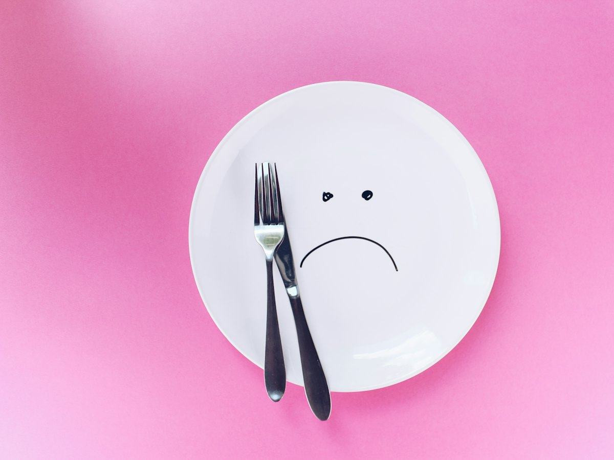

Ayuno
Qué comer al romper el ayuno: ideas sencillas y errores que conviene evitar
Cómo romper el ayuno intermitente sin darte un atracón: qué poner en el plato, ideas de comidas y cómo llevar el control con el temporizador de Pombo AI.
 Por el equipo editorial de Pombo AI
Por el equipo editorial de Pombo AI
12 nov 2026 · 6 min de lectura

Tres nombres dominan las búsquedas sobre ayuno: 16/8, 5:2 y días alternos. Aquí tienes cómo funciona cada uno, qué sabemos de ellos y cómo decidir sin dejarte llevar por la moda.
Consiste en concentrar todas las comidas en una ventana de 8 horas y ayunar las otras 16. Durante el ayuno se permiten bebidas sin calorías, como agua, café solo o infusiones. Por ejemplo, comer entre las 12:00 y las 20:00. Existen variantes más suaves, como el 14:10, y más exigentes, como el 18:6 o el 20:4.
Cinco días a la semana comes de forma habitual y otros dos reduces mucho la ingesta o ayunas. El BMJ lo incluye en la categoría de "ayuno de día completo".
Se alternan días de ayuno de 24 horas con días de comida libre. Es el más exigente de los tres.
En el análisis del BMJ (99 ensayos, 6.582 adultos), fue el único que mostró una ventaja pequeña sobre la restricción calórica continua, de unos 1,29 kg. Sin embargo, los propios investigadores indican que ninguna estrategia por sí sola alcanzó un umbral de pérdida de peso clínicamente significativo y que hacen falta estudios más largos.
| Método | Cómo se hace | Dificultad |
|---|---|---|
| 14:10 | 14 h de ayuno, 10 h para comer | Baja |
| 16:8 | 16 h de ayuno, 8 h para comer | Baja a media |
| 18:6 y 20:4 | 18 o 20 h de ayuno | Media a alta |
| 5:2 | 2 días de ayuno o ingesta muy baja por semana | Media |
| Días alternos | 24 h de ayuno cada dos días | Alta |
La dificultad es una valoración orientativa nuestra, no un dato de los estudios.
Controla tu ayuno con Pombo AI
El temporizador de ayuno del app tiene planes 14:10, 16:8, 18:6 y 20:4, o uno personalizado de 1 a 48 horas. Te avisa al terminar, guarda tu historial y puedes exportarlo en PDF o CSV. Cuando rompas el ayuno, haz una foto a tu plato para registrar calorías y macros.
Es una forma de alimentación con horario restringido: 16 horas de ayuno y una ventana de 8 horas para comer.
Es un ayuno de día completo: cinco días de comida habitual y dos de ayuno o ingesta muy reducida a la semana.
El análisis del BMJ vio una ventaja pequeña del ayuno en días alternos, pero sin relevancia clínica clara. Lo más importante es que puedas mantenerlo.
Aviso: Este artículo es informativo y no sustituye el consejo de un médico o dietista-nutricionista. Si tienes una enfermedad, tomas medicación, estás embarazada o has tenido un trastorno de la conducta alimentaria, consulta con un profesional antes de cambiar tu alimentación.
Cómo romper el ayuno intermitente sin darte un atracón: qué poner en el plato, ideas de comidas y cómo llevar el control con el temporizador de Pombo AI.
Revisamos la evidencia más reciente (Cochrane 2026, BMJ y OCU) sobre el ayuno intermitente: qué sabemos, qué no y qué esperar si lo pruebas.
Qué beneficios cardiometabólicos se han estudiado, qué efectos adversos se mencionan y qué precauciones tomar antes de empezar un ayuno intermitente.